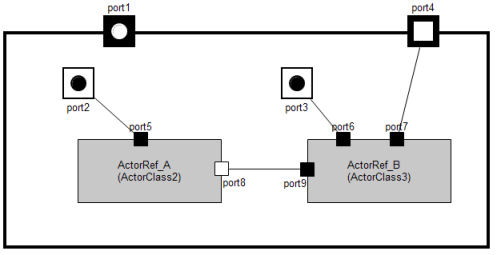
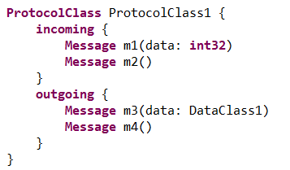

The basic elements of ROOM are the actors with their ports and protocols. The protocol provides a formal interface description. The port is an interaction point where the actor interacts with its outside world. Each port has exactly one protocol attached. The sum of all ports builds up the complete interface of an actor. Each port can receive messages, with or without data, which are defined in the attached protocol. Each message will be handled by the actors behavior (state machine) or will be delegated to the actors internal structure.
|

|

|
| Actor with Subactors | Protocol Definition |
The actor provides access protection for its own attributes (including complex types (classical objects)), including concurrency protection. An actor has neither public attributes nor public operations. The only interaction with the outside world takes place via interface ports. This ensures a high degree of reusability on actor level and provides an effective and safe programming model to the developer.
Receiving a message via a port will trigger the internal state machine. A transition will be executed depending on the message and the current state. Within this transition, detail level code will be executed and response messages can be sent.
With this model, a complex behavior can be divided into many relatively simple, linked actors. To put it the other way round: The complex behavior will be provided by a network of relatively simple components which are communicating with each other via well defined interfaces.
ROOM provides two types of hierarchy. Behavioral hierarchy and structural hierarchy. Structural hierarchy means that actors can be nested to arbitrary depth. Usually you will add more and more details to your application with each nesting level. That means you can focus yourself on any level of abstraction with always the same element, the actor. Structural hierarchy provides a powerful mechanism to divide your problem in smaller pieces, so that you can focus on the level of abstraction you want to work on.
The actor’s behavior will be described with a state machine. A state in turn may contain sub states. This is another possibility to focus on an abstraction level. Take the simple FSM from the blinky actor from the blinky tutorial.
Top level:
blinking Sub machine:

From an abstract point of view there is a state blinking. But a simple LED is not able to blink autonomously. Therefore you have to add more details to your model to make a LED blinking, but for the current work it is not of interest how the blinking is realized. This will be done in the next lower level of the hierarchy.
This simple example might give an idea how powerful this mechanisms is.
The hierarchical FSM provides a rich tool box to describe real world problems (see room concepts).
Layering is another well known form of abstraction to reduce complexity in the structure of systems. ROOM is probably the only language that supports Layering directly as language feature. Layering can be expressed in ROOM by Actors with specialized Ports, called Service Access Points ( SAP) and Service Provision Points ( SPP).
The Actor that provides a service implements an SPP and the client of that service implements an SAP. The Layer Connection connects all SAPs of a specific Protocol within an Actor hierarchy with an SPP that implements the service. From the Actors point of view, SAPs and SPPs behave almost like regular ports.
The Example shows a layered model. The Layer Connections define e.g. that the ApplicationLayer can only use the services of the ServiceLayer and the CommunicationLayer. Actors inside the ApplicationLayer that implement an SAP for those services are connected directly to the implementation of the services. Layering and actor hierarchies with port to port connections can be mixed on every level of granularity.
Run to completion (RTC) is a very central concept of ROOM. It enables the developer to concentrate on the functional aspects of the system. The developer doesn’t have to care about concurrency issues all the time. This job is concentrated to the system designer in a very flexible way. What does run to completion mean: RTC means that an actor, which is processing a message, can not receive the next message as long as the processing of the current message has been finished. Receiving of the next message will be queued from the underlying run time system.
Note: It is very important not to confuse run to completion and preemption. Run to completion means that an actor will finish the processing of a message before he can receive a new one (regardless of its priority). That does not mean that an actor cannot be preempted from an higher priority thread of control. But even a message from this higher prior thread of control will be queued until the current processing has been finished.
With this mechanism all actor internal attributes and data structures are protected. Due to the fact that multiple actors share one thread of control, all objects are protected which are accessed from one thread of control but multiple actors. This provides the possibility to decompose complex functionality to several actors without the risk to produce access violations or dead locks.